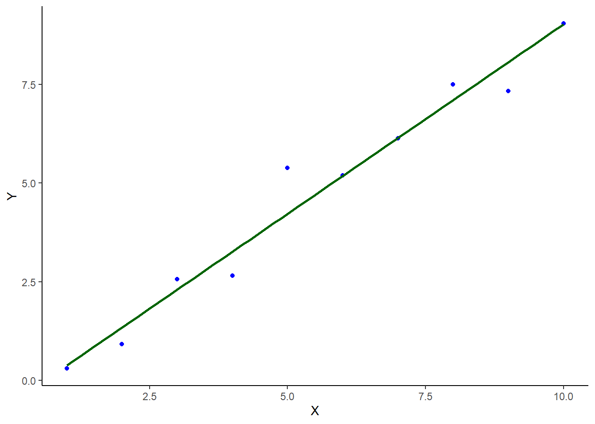

Chapter 4 Statistical Models
One of the great scientific achievements humanity has made is the ability to conceptualize complex phenomena and processes in the natural world through models that amplify the pertinent facts and relationships of interest and provide a logical platform from which to study systems that drive decision-making. Most scientific models can be expressed as mathematical abstractions. Two broad classes of mathematical models are deterministic models and stochastic models. Broadly speaking, deterministic models leave nothing to chance and blatantly ignore uncertainties. For example the concentration \(c\) of a pollutant in a river at a point \(x\) and time \(t\) can be modeled as: \[ c(x,t)=c_0 (x-vt)e^{-kt}, \] where \(c_0(x)\) is the initial pollutant concentration at point \(x\), \(v\) is the water velocity, and \(k\) is a proportionality constant, measuring the efficiency of bacterial decomposition of the pollutant. This is a deterministic model: given inputs \(x, v\) and \(c_0\), the pollutant concentration at location \(x\) and time \(t\) is predicted with certainty. Such a model makes a very strong assumption that the model is correct and the inputs are measured with perfect precision and accuracy. But the pollutant concentration makes certain assumptions: (i) that the pollutant concentration is uniform in all directions except downstream flow, (ii) there are no diffusive effects due to to contour irregularities and turbulence, (iii) the pollutant decays as a negative exponential due to bacterial action, (iv) the bacterial efficiency is time-homogeneous, and (v) there is thorough mixing of the pollutant in the water. These assumptions are reasonable, but they not necessarily (always) true. The uncertainty of the effects at a particular location along the river and point in time can be incorporated by casting the model stochastically: \[ c(x,t) = c_0 (x-vt)e^{-kt} + e \] where \(e \sim D(0,\sigma^2)\), for some probability distribution \(D\). Allowing for the random deviation \(e\) we are now claiming that \(c(x,t)\) is a random variable with expectation: \[ \mathbb E[c(x,t)] = c_0 (x-vt)e^{-kt} \]
4.1 Linear Models in R
Most R functions uses a formula representation to represent regression models (for continuous variables) or means and effects models (for categorical variables):
where the tilde (~) defines a model formula and model represents a set of terms to include as predictors in the model. Terms are included by their variable names and various operators such as + (include in model), - (exclude from model), : (interaction), * (full factorial structure), and so on. The intercept term (which can be explicitly denoted in a model as a 1) is implicitly defined and need not be specified (although I often do for completeness). Thus the following model formulae are equivalent (all include the intercept):
whereas these formulae express different ways of excluding the intercept:
Linear models are fitted using the method of ordinary least squares by providing the model formula as an argument to the lm() function. For example, we could generate a fictitious response variable (Y) and a fictitious continuous predictor (X) as follows:
## Loading required package: pacmanlibrary(pacman)
p_load(tidyverse)
# Generate data set
N = 10
fictitious_data = tibble(
X = 1:N,
Y = 0.9*X + rnorm(n=N, mean=0, sd=0.5)
)
# Plot data
ggplot(data = fictitious_data,
mapping = aes(x=X, y=Y)) +
geom_point(colour = "blue") +
geom_smooth(method = "lm",
formula = y ~ x,
se = FALSE,
colour = "darkgreen") +
theme_classic()
The plot shows the data points and a simple linear regression line fit through them. To fit the regression in such a way as to be able to work with the estimated parameters we use lm():
# Fit simple linear regression model
fictitious_lm = lm(
formula = Y ~ 1 + X,
data = fictitious_data)To examine the estimated parameters (and hypothesis tests) from the fitted model we can use the function summary():
##
## Call:
## lm(formula = Y ~ 1 + X, data = fictitious_data)
##
## Residuals:
## Min 1Q Median 3Q Max
## -0.73335 -0.33377 0.00086 0.20103 1.16500
##
## Coefficients:
## Estimate Std. Error t value Pr(>|t|)
## (Intercept) -0.57944 0.39534 -1.466 0.181
## X 0.96007 0.06371 15.068 3.72e-07 ***
## ---
## Signif. codes: 0 '***' 0.001 '**' 0.01 '*' 0.05 '.' 0.1 ' ' 1
##
## Residual standard error: 0.5787 on 8 degrees of freedom
## Multiple R-squared: 0.966, Adjusted R-squared: 0.9617
## F-statistic: 227.1 on 1 and 8 DF, p-value: 3.72e-07There is a lot of useful information presented here, however it is not necessarily easy to access and work with in successive computations. This is where the broom package comes in. There are three main functions that allow us to extract pertinent information and store it in data frames, for easy access later. The functions are:
tidy(): returns the statistical findings of the model (such as coefficients)glance(): returns a concise one-row summary of the model- `
augment(): adds prediction columns to the data being modeled
Using tidy(fictitious_lm) we can extract the pertitent statistical information such as estimates, standard errors, test statistics and p-values:
# Ensure broom package is loaded
p_load(broom)
# Set output digits to 3 for printing
options(digits=3)
# tidy() output
tidy(x = fictitious_lm,
conf.int = TRUE,
conf.level = 0.95)## # A tibble: 2 x 7
## term estimate std.error statistic p.value conf.low conf.high
## <chr> <dbl> <dbl> <dbl> <dbl> <dbl> <dbl>
## 1 (Intercept) -0.579 0.395 -1.47 0.181 -1.49 0.332
## 2 X 0.960 0.0637 15.1 0.000000372 0.813 1.11From this we see, for example, that the simple linear regression equation is given by: \[ \hat Y_i = 0.387 + 0.871\times X_i, \] and that we cannot reject \(H_0: \beta_0=0\) (p = 0.334), but we strongly reject \(H_0:\beta_1 = 0\) (p = 0.000000536), indicating that a model with no zero intercept will be just as good:
fictitious_lm.2 = lm(
formula = Y ~ -1 + X,
data = fictitious_data)
# Compare the full model to the reduced model with zero intercept
anova(fictitious_lm, fictitious_lm.2) %>% tidy()## # A tibble: 2 x 6
## res.df rss df sumsq statistic p.value
## <dbl> <dbl> <dbl> <dbl> <dbl> <dbl>
## 1 8 2.68 NA NA NA NA
## 2 9 3.40 -1 -0.719 2.15 0.181We see that there is no significant reduction in sums of squares between the model with the unconstrained intercept and the model with the intercept constrained to be zero. We therefore opt to use the latter model:
## # A tibble: 1 x 7
## term estimate std.error statistic p.value conf.low conf.high
## <chr> <dbl> <dbl> <dbl> <dbl> <dbl> <dbl>
## 1 X 0.877 0.0313 28.0 4.58e-10 0.806 0.948which has regression equation: \[ \hat Y_i=0.927\times X_i \]
Using glance(fictitious_lm.2) we can obtain a one-row summary of the reduced model. For the linear model this summary contains various statistics about the fit of the model, such as the residual standard error and \(R^2\):
## # A tibble: 1 x 12
## r.squared adj.r.squared sigma statistic p.value df logLik AIC BIC
## <dbl> <dbl> <dbl> <dbl> <dbl> <dbl> <dbl> <dbl> <dbl>
## 1 0.989 0.987 0.615 NA NA NA -8.79 21.6 22.2
## # ... with 3 more variables: deviance <dbl>, df.residual <int>, nobs <int>Using augment(fictitious_lm.2) we get back an observation-level data frame containing the original data used to fit the model as well as fitted values (.fitted) and standard errors (.se.fit).
augment(x = fictitious_lm.2,
newdata = NULL,
se_fit = TRUE,
interval = "none") # confidence, prediction## # A tibble: 10 x 9
## Y X .fitted .se.fit .resid .hat .sigma .cooksd .std.resid
## <dbl> <int> <dbl> <dbl> <dbl> <dbl> <dbl> <dbl> <dbl>
## 1 0.300 1 0.877 0.0313 -0.577 0.00260 0.619 0.00230 -0.941
## 2 0.923 2 1.75 0.0626 -0.832 0.0104 0.581 0.0194 -1.36
## 3 2.56 3 2.63 0.0940 -0.0686 0.0234 0.651 0.000306 -0.113
## 4 2.65 4 3.51 0.125 -0.860 0.0416 0.573 0.0887 -1.43
## 5 5.39 5 4.39 0.157 0.999 0.0649 0.540 0.196 1.68
## 6 5.19 6 5.26 0.188 -0.0696 0.0935 0.651 0.00146 -0.119
## 7 6.13 7 6.14 0.219 -0.0115 0.127 0.652 0.0000585 -0.0200
## 8 7.50 8 7.02 0.251 0.481 0.166 0.625 0.147 0.858
## 9 7.33 9 7.90 0.282 -0.568 0.210 0.611 0.288 -1.04
## 10 9.04 10 8.77 0.313 0.265 0.260 0.643 0.0882 0.501Notice that augment() also appends model-specific statistics that enable deeper exploration of the fit of the model. For example, we can explore how well the model fits by plotting the observed values Y against the fitted values .fitted (compare this to the plot constructed earlier, which was based on the full model with unconstrained intercept).
p1 = augment(x = fictitious_lm.2) %>%
ggplot(mapping = aes(x = X)) +
geom_point(mapping = aes(y = Y), colour="blue") +
geom_line(mapping = aes(y = .fitted), colour="magenta") +
theme_classic()
p1 We could overlay the unconstrained model as follows:
We could overlay the unconstrained model as follows:
4.2 Estimating linear model parameters
During model fitting, parameters can be estimated using a variety of estimation methods. The methods of ordinary least squares (OLS), maximum likelihood (ML) and restricted maximum likelihood (REML) are the most common. The OLS estimates of parameters minimize the sum of squared deviations between the observed and fitted values (a function of the model parameters). There are several variants on the method of ordinary least squares: weighted least squares can accommodate data that varies in quality and generalized least squares can accommodate heterogeneous variances and correlated data. The model we’ve been looking at is usually referred to as the general linear model (and it was once the most general linear model, but it is not very general by today’s standards). Broadly speaking we consider such a model with purely continuous predictor variables to be a regression model, while a model with purely categorical predictors is an analysis of variance (ANOVA) model. Models that incorporate both continuous and categorical predictors are analysis of covariance (ANCOVA) models.
ML estimators estimate model parameters such that the (log) likelihood of obtaining the observed data is maximized. Under standard assumptions (normal data, constant variance, independent observations) the ML estimates are identical to the OLS estimates. However, maximum likelihood parameter estimation extends beyond the general linear model to the so-called “generalized” linear model, which are not restricted to normally distributed errors and response. Instead they generalize to any distribution belonging to the family of distribution models called exponential dispersion models (which include normal, binomial, Poisson, gamma, negative binomial and others).